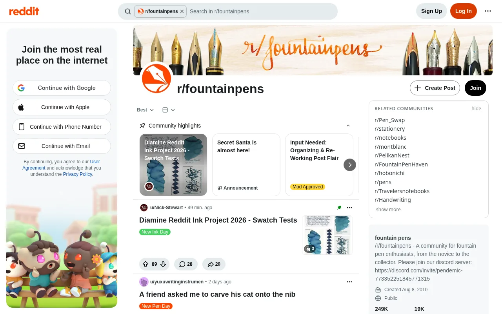
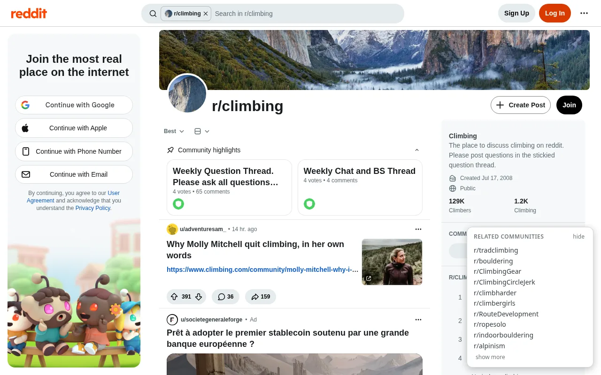
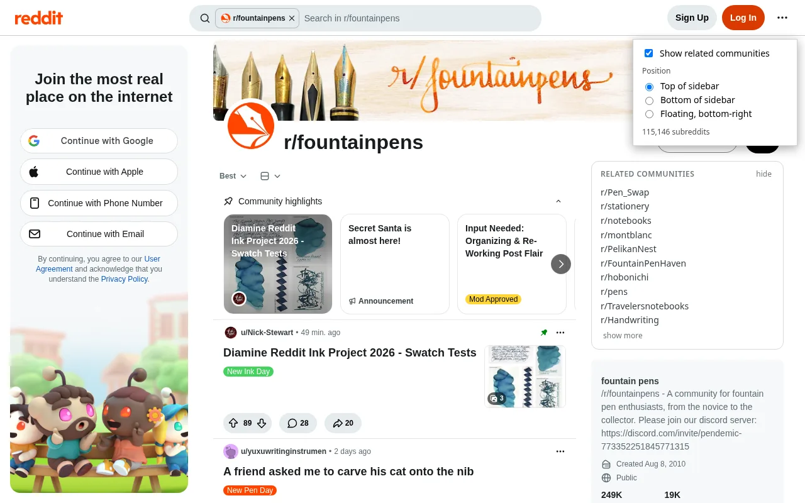

Adds a list of related subreddits to the sidebar on subreddit pages. Useful for finding smaller communities on the same topic.
Features
- Related subreddits — Two subreddits count as related when a lot of the same people comment in both. Shows 10 per subreddit, and 20 with show more.
- About 115,000 subreddits — The lists come from a month of public Reddit comments (September 2026).
- Position — Put the list at the top or bottom of the sidebar, or in a floating box in the bottom-right corner.
- On/off switch — Turn it off from the toolbar button, or hide the panel on the page.


Privacy
It doesn't use your Reddit account, and the lists are built into the extension, so it makes no network requests and doesn't send anything anywhere. It only runs on reddit.com and only reads the URL to know which subreddit is open. Your settings stay in your browser.
Credits
The lists are derived from public Reddit comment data from Arctic Shift; only the names of related subreddits are included. Related Communities for Reddit is not endorsed by or affiliated with Reddit, Inc.